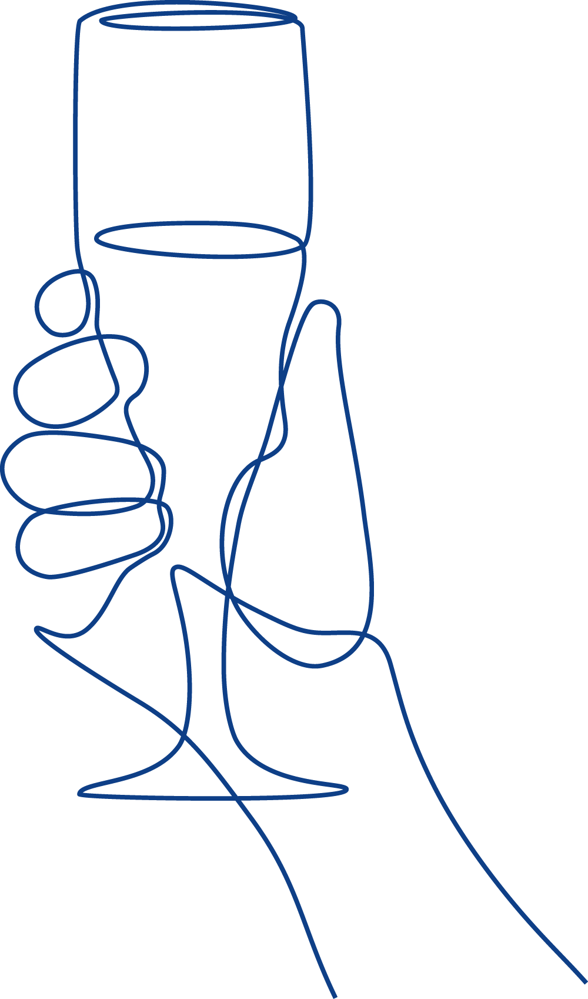

Doelstellingen

Doelstelling van de stichting
Stichting De Bruine Kroeg heeft ten doel het stimuleren van aandacht voor en kennis over traditionele cafés (zogeheten ‘bruine kroegen’) en het onder de aandacht brengen van de historische en culturele achtergronden van deze cafés, alsmede hun sociale functie.
De stichting tracht haar doel onder meer te verwezenlijken door:
- het faciliteren van projecten (zoals De Dag van de Bruine Kroeg) om bestaande traditionele cafés onder de aandacht te brengen en het faciliteren van soortgelijke non-profit projecten;
- het verzamelen en selecteren van publicaties over traditionele cafés en het openstellen daarvan voor het publiek via haar website, waaronder niet-commerciële print (kranten, tijdschriften, boeken), radio, televisie en podcasts;
- het verwerven van fondsen in het kader van de doelstelling;
- het verstrekken van informatie via alle audiovisuele middelen, alsmede het (doen) organiseren van ontmoetingen in de vorm van evenementen en andere bijeenkomsten;
- alle overige wettige middelen welke tot het gestelde doel kunnen leiden.
De stichting heeft geen winstoogmerk.
Ondersteuning van evenementen
Stichting De Bruine Kroeg faciliteert evenementen die aansluiten bij haar doelstellingen door middel van organisatorische adviezen en/of administratieve ondersteuning. De stichting verstrekt geen financiële ondersteuning.
Voor De Dag van de Bruine Kroeg Amsterdam, die jaarlijks wordt georganiseerd op de eerste zaterdag van oktober, draagt de stichting kosteloos bij aan de organisatie en aan de financiële administratie.
Organisatoren van evenementen kunnen zich voor ondersteuning wenden tot de stichting. De stichting behoudt zich het recht voor om een aanvraag te honoreren dan wel te weigeren.